LipSyncOne Help
Make transparent, lip-synced character videos from PSD files, images or VRM models and audio.
Windows 11 x64 / Guide for 0.5.9 / Updated November 8, 2026
The reference screenshots show the Japanese interface. Instructions use English menu names. Select English in the app's Language menu.
START
Make your first character video
- Create a character. Choose PSD layers, two full-body images, separate parts or VRM. Try a free sample if you do not have artwork.
- Add speech. Import a WAV and drag it onto the character's audio row. Wait for analysis, then check lip sync and blinking.
- Export. Open File → Export Video and choose a format supported by your video editor. Place the transparent clip over your background and subtitles.
Before you begin
Install the app and choose New Project on the home screen. Use 2D Only for images and PSD, or 2D + 3D for VRM. You can change this later under Edit → Production Mode. Choose the aspect ratio, resolution or custom dimensions while checking the transparent canvas preview. The chosen size is kept when the first media is added. A new project starts with no layers.
See the workspace guide to find a control, or update an existing installation.
PSD
Create a character from PSD
Choose body, mouth and eye layers from one hierarchy. Their original positions are preserved. Use an RGB, 8-bit PSD and keep the original file: the project continues to reference it.

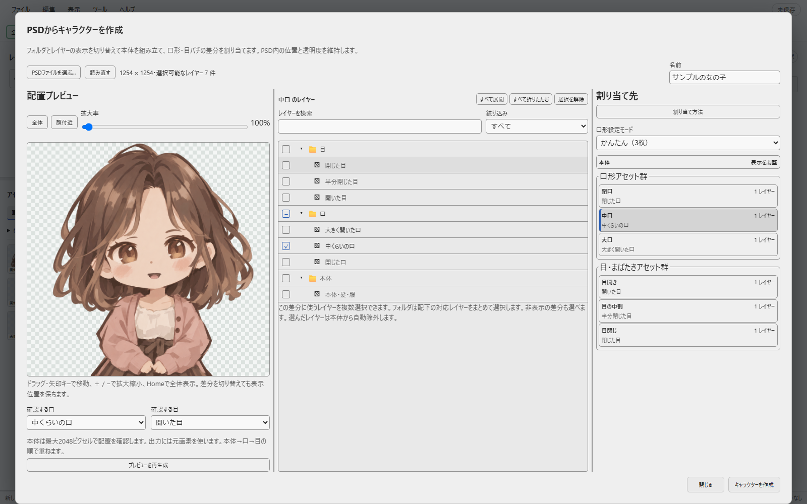
- Open the PSD. Choose Add Character → Create from PSD, then Choose PSD File. Loading can be cancelled.
- Build the body. Select Body on the right. Use the eye icons in the center to show the folders and layers that should always be visible, such as clothes and hair.
- Assign mouth and eyes. Select a slot on the right, then check its layers in the center. Several layers can make one shape. Choose 2, 3 or 9 mouth shapes, and open, half-closed and closed eyes. Assigned layers are automatically excluded from the body.
- Check and create. Switch shapes, use Full View or Face Area, and zoom in. Enter a name and choose Create Character. One Undo reverses the whole import.
Next, place a WAV on the character's audio row and check lip sync and blinking.
Visibility, assignment and preview controls
Body uses the PSD layer order and folder hierarchy. Arrows expand folders; eye icons control visibility. Hiding a parent preserves its children's settings. Use ↑ / ↓ to move, ← / → to open or close folders, and Space to toggle visibility. Reset to PSD Visibility restores the original settings. The preview composites body, mouth, then eyes. Its body preview is limited to 2048 pixels; export uses the original pixels.
Hidden layers may also be assigned as mouth or eye shapes. Selecting a folder includes all supported descendants, including hidden ones. Remove unwanted layers individually. A partially selected folder displays a minus sign. Clear Selection empties only the current slot. Every layer used by a shape is excluded from the body. Each slot keeps its own selection.
Each mouth mode keeps its assignments. Returning to a mode restores them; groups that cannot be mapped to another mode remain unassigned there. Choosing a slot also selects that shape in the preview. Mouth and eye preview states are independent. You can change the preview separately; selecting the assignment slot again restores synchronization.
Search by name or filter to assigned layers and the current shape. Only the layer list scrolls. Zoom, drag or arrow keys move the preview; drag the column boundaries to resize them. On a narrow screen or in detailed mouth mode, use the assignment selector and the preview options popup. Escape closes just that popup. Creation waits until the latest preview is ready, keeping the controls in place.
Supported PSD files and rendering limits
RGB, 8-bit PSD raster layers are supported, with supported raster masks and layer opacity. PSB, CMYK, 16/32-bit files, text, adjustments, vectors, special blending, clipping and layer effects are not fully reproduced. Check the warnings in the import dialog. Rasterize the required artwork in your painting app when necessary.
Reloading, external edits and moving the project
Import does not alter the PSD. Use Collect Project to move the project with its source files. If the PSD or project changes during setup, reload before creating the character. Reloading the same PSD preserves assignments and visibility for stable layer IDs. Unmatched layers are reported and cleared; failure or cancellation preserves the previous setup.
External edits update pixels using the original layer IDs. Renaming or pixel changes work when stable IDs and structure remain intact. Changes to folders, order or IDs can prevent body reload to avoid applying settings to the wrong layer. Files without unique IDs may lose references even after pixel-only edits. Restore the original file structure, IDs and location, or import a new character.
App-adjusted positions and image anchors are preserved; PSD position changes are not followed automatically. After changing crop bounds or image dimensions, check the preview and adjust the body and anchors as needed. During a temporary missing or incomplete save, the app keeps its last successfully loaded appearance for that session. Restarting and exporting require a readable original PSD.
FIRST CLIP
Start with two images and a free sample
Choose 2D Only or 2D + 3D before creating a project. Edit → Production Mode changes it later; returning to 2D Only requires a project with no 3D media. Existing projects still open normally, and the selected mode is saved in the project.
1. Download sample 3
Download sample 3 — two full-body images
Extract the ZIP. The images folder contains the closed- and open-mouth PNGs; audio contains a WAV. Your own two images should have the same size and placement and differ only around the mouth.
2. Create a project
Choose New Project on the home screen. Use Open Project to continue a saved project.

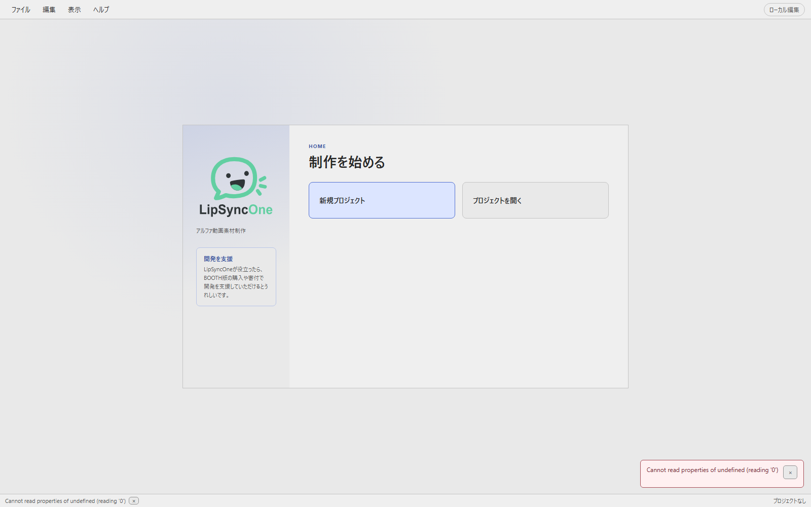
3. Add the two images
Open Add Character and choose Full-body lip sync with two images. Add both images, assign the closed and open mouth, then choose Create Character from Two Images. Compare the full images to ensure everything except the mouth lines up. Cropping and separate mouth alignment are unnecessary.

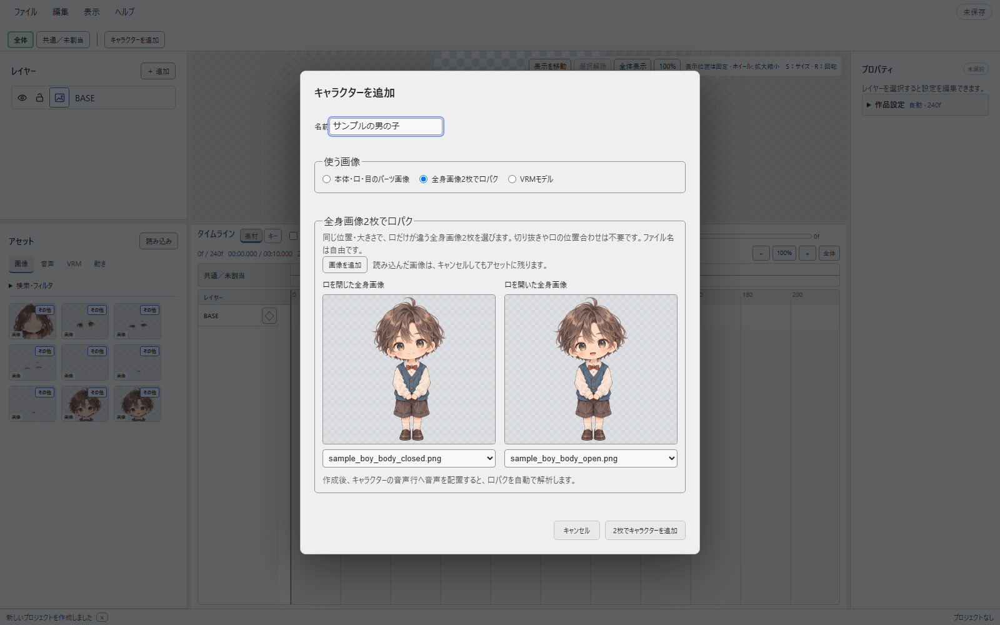
4. Add speech
Import the WAV in Assets, then drag it from the Audio tab to this character's audio row. Analysis begins automatically. The audio row is above the mouth-shape result row; play the timeline once analysis finishes.

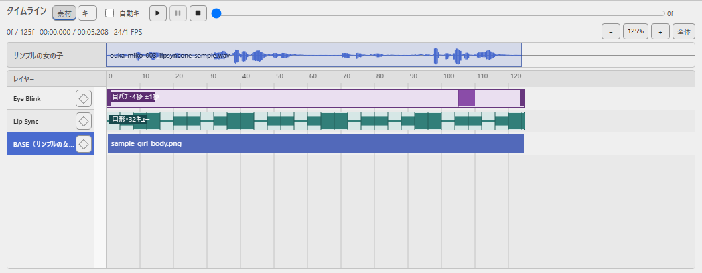
5. Export a transparent clip
Open File → Export Video. For lossless image animation, choose the lossless MOV profile with Transparent (Alpha). The default compact ProRes 4444 profile is another editing option. WebM requires an editor with WebM alpha support. See export formats for details.
Sample 3 uses VOICEVOX:猫使アル. Include the required voice credit when publishing and read the ZIP's README. Sample 3 has no eye-blink images.
Three free sample sets
- Sample 1 — brown-haired girl: body, mouth and eyes, 7 PNGs and 2 WAVs. Voice: VOICEVOX:櫻歌ミコ. Use separate parts.
- Sample 2 — silver-haired girl: a second parts-based character for conversations, 7 PNGs and 2 WAVs. Voice: VOICEVOX:春日部つむぎ.
- Sample 3 — boy: 2 full-body PNGs, 1 WAV and a reference GIF. Voice: VOICEVOX:猫使アル.
Read each ZIP's README for image and audio use, redistribution and required credits. The sample artwork is AI-generated and aligned; it is not official artwork for the voice characters. Included instructions and sample speech are in Japanese.
01
Find your way around
Select the image, layer or audio you want to change. Layers and Assets are on the left; Preview and Timeline are in the center; Properties is on the right. The checkerboard means transparency.

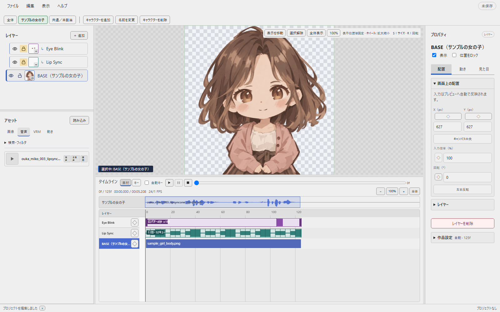
- Layers
- Stacking order, visibility and position locks.
- Assets
- Imported images, audio, VRM and motion. Drag media from here to use it.
- Preview
- Select and place artwork or adjust a model's pose.
- Timeline
- Decide when media appears. Audio, images, motion and mouth results use separate rows.
- Properties
- Placement controls position, size, rotation and time. Motion controls lip sync, blinking, poses and animation. Appearance controls opacity, light, materials and expressions. Project Settings at the bottom controls overall duration.
Click section headings to expand or collapse them. Tabs and expanded states are remembered on this PC. Drag panel borders to resize them, or use the View menu to reset the layout.
UI scale and saved panel layouts
View → UI Scale offers 80, 90, 100, 110, 125 and 150%. Apply confirms the change. Small windows may temporarily use a lower scale; enlarging restores the preferred scale. Saved Panel Layouts stores panel sizes, preview-controls expansion, media/key view and grouped/individual audio view on this PC. Save New and Overwrite Selected are separate actions; choose a layout and Apply. The last applied layout is restored on restart. It excludes project edits, selection, playhead, UI scale and theme.
Preview performance and export quality
Edit → Preferences (Ctrl+,) sets preview and export rendering resolution independently. Both default to 125%. Lower settings reduce work; higher settings smooth edges. Canvas and output dimensions do not change. Apply saves preferences on this PC, including after resetting to defaults. Export uses the settings present when it starts.
FXAA smooths 2D and 3D edges without increasing resolution, with some softness. Four-sample model antialiasing improves 3D edges at greater cost. Defaults are None for preview and four-sample models for export. Mipmaps and up to 4× GPU-supported anisotropic filtering reduce flicker and blur in small or slanted textures. Alpha edges are preserved; original pixel-style VRM texture filtering is respected.
02
Import and manage media
Use Import in Assets for PNG/JPEG images or WAV/MP3 audio. Use a PNG with alpha for transparent artwork. Drag images onto layers and audio onto a character's audio row. The audio play button lets you listen before placement. Search and Filters narrows the list by name or use; collapse it for more space.

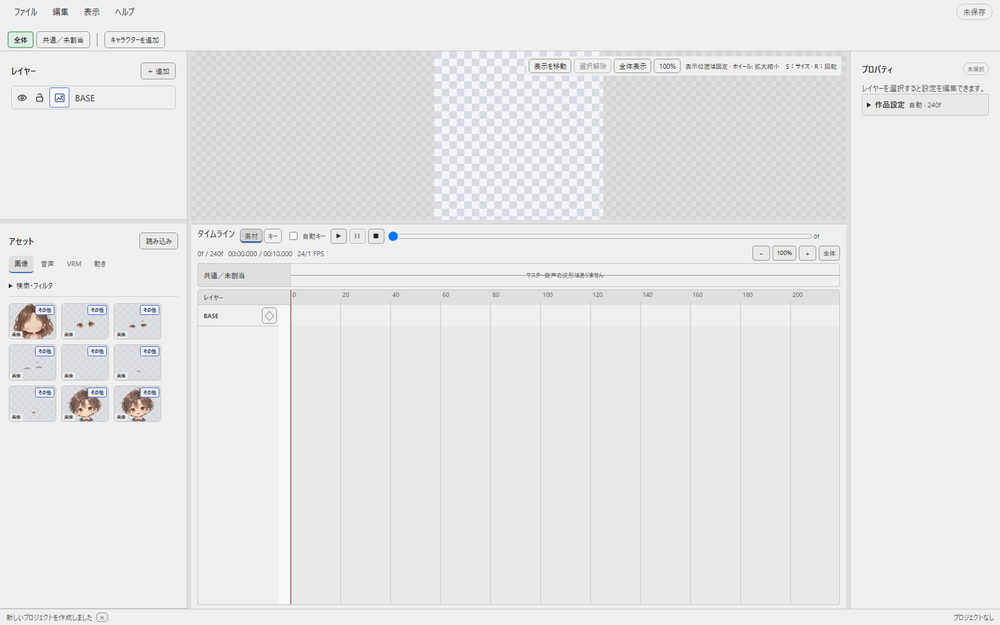
Generate speech with VOICEVOX
With a project open, select VOICEVOX in the top bar. Choose the speaker, style, text and speaking speed. Generate and Play (生成して再生) previews speech before saving. The player supports pause, resume and seeking. Replaying the same text, speaker and speed reuses the generated preview. These recently added controls may still show Japanese labels.
Generate WAV and Import (WAVを生成・取り込む) asks for a new filename and adds the WAV to Assets. Existing files are not overwritten. Drag the asset to the intended character's audio row. Speaker icons, portraits and terms are displayed when available.
Install VOICEVOX separately on this PC. The connection is fixed to 127.0.0.1:50021. If disconnected, use Launch VOICEVOX (VOICEVOXを起動), or start it yourself and reconnect (再接続). If it is not in a standard location, select VOICEVOX.exe. Follow each speaker's terms and credit requirements.
Keep PSD originals in the library
Select the PSD tab and Import, or drop a PSD file. Clicking its name opens character creation. Select checkboxes to remove unused originals from the list; referenced originals cannot be removed. One Undo restores the list entry. The PSD file itself is never deleted.
PSD thumbnails
Visible originals receive small previews of their default appearance. Externally modified originals are checked again; failures retain the filename and status. Thumbnail generation does not copy the original or every layer, and does not remove protection for referenced PSDs.
Group part images by filename
Use a shared prefix such as sample_girl. Replace {name} below with the character's common prefix. Copy buttons copy the example name. Two full-body images can use any filenames.
| Role | Filenames | Required set |
|---|---|---|
| Body | {name}_body.png | 1 |
| Two mouth shapes | {name}_mouth_closed.png{name}_mouth_open.png | Both |
| Three mouth shapes | {name}_mouth_closed.png{name}_mouth_medium.png{name}_mouth_wide.png | All 3 |
| Nine mouth shapes | {name}_mouth_A.png{name}_mouth_B.png{name}_mouth_C.png{name}_mouth_D.png{name}_mouth_E.png{name}_mouth_F.png{name}_mouth_G.png{name}_mouth_H.png{name}_mouth_X.png | All 9 |
| Two eye states | {name}_eye_open.png{name}_eye_closed.png | Both |
| Three eye states | {name}_eye_open.png{name}_eye_half.png{name}_eye_closed.png | All 3 |
Underscores are recommended; matching ignores letter case. Choose the complete groups in Add Character. Incomplete groups and duplicate roles cannot be selected.
When you edit media in another app
Saving the original triggers a reload. File → Reload Assets checks immediately. Changed audio updates its waveform and mouth cues. A temporarily unreadable save keeps the last appearance while retrying. If you moved or deleted a file, restore its location or replace the asset reference in Properties.
03
Parts and multiple characters
For two full-body images, choose Add Character → Full-body Lip Sync with Two Images. Keep all pixels except the mouth aligned. See sample 3, or use layers from a PSD.
Create from separate body, mouth and eye images
- Extract sample 1 or 2 and import the PNGs in its images folder. You can also import from Add Character.
- Choose Separate Body, Mouth and Eye Images, then select the common filename prefix in the media group selector.
- Check the name, body, mouth and eye sets, then add the character.

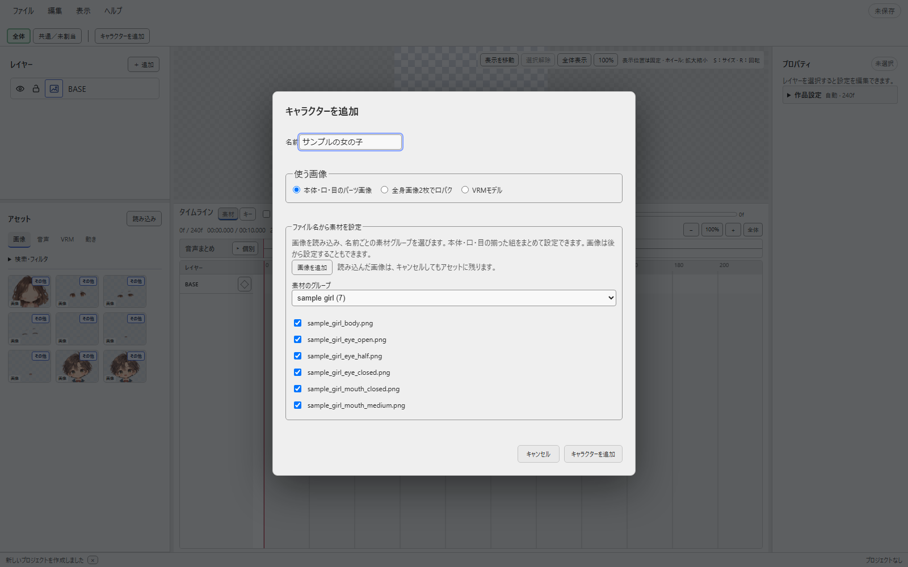
Place its WAV on the new character's audio row. To use files without matching names, choose the images later in Mouth Shapes and Eye Blink.
Use more than one speaker
Add one character per speaker and place each voice on its own audio row. Different rows may play together; clips on the same row cannot overlap. All shows the full arrangement. Shared / Unassigned is for backgrounds and props. Switching tabs does not hide or mute other characters. To move audio to another character, remove its placement and place the same asset on the intended row; the asset remains available.
Record your own voice
Use Edit → Record, save the audio as media, then place it on the intended character's audio row.
3D
VRM models, poses and motion
New VRM characters start with their arms lowered, camera eye contact and breathing enabled, and smooth body motion. Change these settings under Motion. Characters already saved in a project use their saved settings.
For supported VRoid VRM 1.0 models, the app uses the model's head collider to reduce forehead clipping on short front strands that have no collision or motion reference settings. You can use the original VRM file directly.
- Use 2D + 3D mode. In Add Character choose VRM Model, import a .vrm, select it and add the character. VRM 0.x and 1.0 are supported.
- Place audio on that character's audio row for automatic lip sync.
- Play to check the result. Motion contains lip sync, blinking, breathing and other automatic motion.
- Select a basic pose under Motion, or use the preview's 3D pose controls. The large ring at the feet moves the whole body; wrist and ankle rings control limbs. IK moves wrists or ankles with elbows/knees following; FK rotates a joint. Release to commit; Escape cancels.

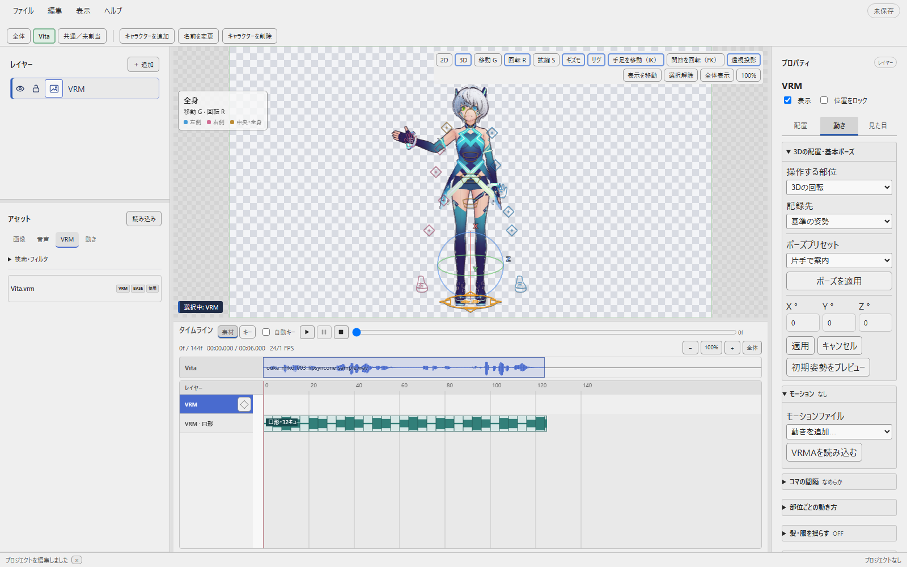
Arrange VRMA clips
Import .vrma files and drag them from Assets → Motion onto a VRM layer. Move a clip to change its start; drag an edge to change its length. The blue row is motion. The separate mouth row displays analysis and does not accept media.

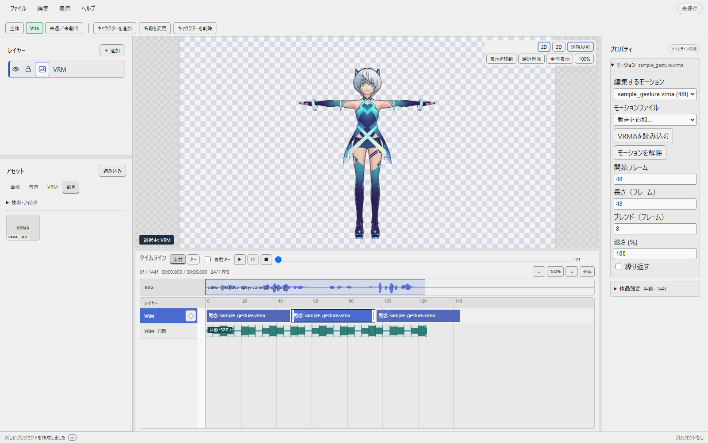
Images and motion cannot overlap on the same row. Clips blend with the basic pose at their boundaries and with adjacent motion. Select a clip and set Blend (Frames) under Motion. The default is 6 frames, 0 switches immediately, and short clips reduce the transition automatically. Adjust speed or looping there. Delete or Remove Motion removes only the selected placement. Audio is placed separately.
Import motion or a pose from FBX / GLB
Use Assets → Motion → Import. This imports humanoid movement, not the source model. Choose a clip and preview it before importing. For a static pose, enable the static-pose option and select its frame. In-place movement removes horizontal travel while keeping vertical movement.
If orientation or arms look wrong, open the bone/reference-pose settings and map the source bones. Adjust reference angles, up and forward axes if necessary. Drag the imported asset to a VRM layer; importing from a selected VRM's Motion section also places it there.
Later, Conversion Settings changes every placement of that asset. Duplicate with Different Settings creates a separate version. Source edits reload automatically or through File → Reload Assets, preserving the last valid result during a save. Keep the FBX/GLB with the project. Export uses the files and settings fixed at its start. Model geometry, materials, lights, arbitrary expressions and source IK conversion are outside the supported motion conversion.

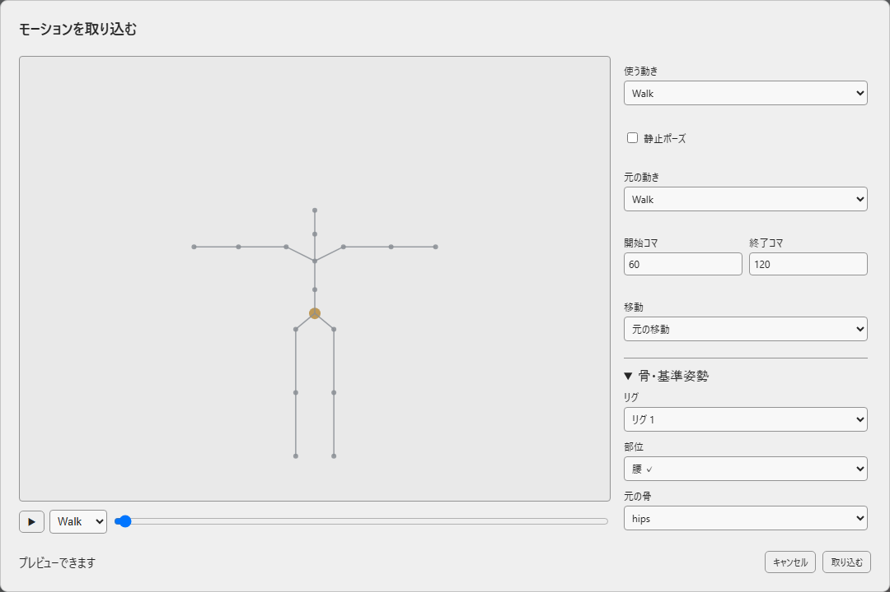
Save converted motion, edited motion or the current pose as VRMA
Open Tools → VRMA Conversion. To convert imported FBX/GLB, select the conversion mode, choose an imported asset, then its clip or registered static pose. This does not require a VRM placement. To save an edited sequence or pose, choose the edited-motion mode and a VRM. Confirm the target, start frame and length. Current Pose saves one committed frame at the playhead where the dialog opened. Record uncommitted changes first.
You can exclude whole-body movement/orientation, expressions/gaze or breathing/idle. Saved lip sync, blinking and committed FK/IK can be included. The selected range starts at time zero and is held frame by frame at the project rate; horizontal travel starts at the origin. The camera, canvas placement, model appearance and hair/clothes physics are excluded. Camera eye contact is not baked into VRMA.
The preview prepares and plays automatically, including after changing settings or the preview model. It estimates a fixed view from at most 64 evenly distributed samples, including the endpoints, with a margin. Brief large movements can fall outside this framing: reduce the viewing scale if needed. Playback and saved motion are not frame-skipped. Pause, seek and inspect the model on the left; settings on the right regenerate the preview and cancel older work.
The built-in X Bot can preview body motion without another VRM. You can use a project VRM or a separate VRM instead. Check expressions on the source model because the built-in model may not have them. Credits are available in the dialog. The preview model is not added to the project; no audio plays. Regenerate after an error or a changed source file before saving.
Generation can be cancelled. Failure or cancellation preserves existing output, and closing the project cancels work. Open the saved location or reimport the VRMA afterward. Disable automatic lip sync, blinking or breathing when reusing a clip that already contains them if they would be applied twice.
Constant positive uniform scale is supported; movement is normalized by body size. For animated, nonuniform or nonpositive scale, exclude whole-body movement/orientation and retry. Direct eyeball poses cannot be saved; reset them. Exclude unsupported gaze expressions or shorten a range that exceeds the size limit. Other models can look different because of proportions and expression names.
Automatic motion and eye contact
Motion → Breathing / Idle enables automatic idle movement; strength and speed control its amount and tempo. Blinking also works without speech. Hair / Clothes Physics uses the model's spring settings. Motion sections are grouped as mouth/eyes, automatic body motion, stepped motion, and clips/manual poses. Their expanded states are remembered.
Camera Eye Contact turns only the eyes toward the camera and preserves the head/body pose. It is saved per character, supports Undo, and appears in preview, video and current-frame PNG. It requires model look-at support and respects its limits. Turning it off restores the original gaze; it is excluded from VRMA export.
Projection, light and depth
New models use perspective projection. Use the preview's orthographic/perspective control or Numpad 5 to switch. The view uses the project camera; middle-drag does not orbit it. Appearance → Lighting changes direction, preset and intensity. The settings are saved and exported.
Placement → Depth Z moves a layer toward the viewer with larger values, away with smaller values. Use the Z handle or G then Z; Escape cancels. Equal depths follow layer order. Images and VRM use the same projection. In perspective, nearer objects look larger. Record keys to animate the change.
Image opacity and fades
Appearance → Opacity changes an image layer from 100% (original) to 0% (invisible), multiplied by character opacity. Record keys at different frames to fade. Mouth/eye override rows have their own opacity. There is no whole-model VRM opacity control: original transparent materials and transparent video backgrounds remain supported. Legacy whole-VRM opacity values and keys do not affect appearance.

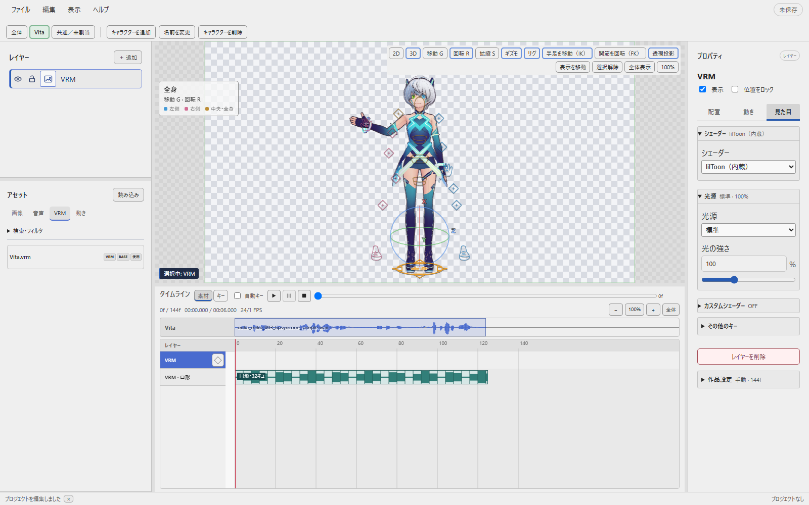
Pose with the keyboard
In the preview, G moves, R rotates and S scales. X/Y/Z constrains an axis; repeating it cycles world, local and view space. Press R again for trackball rotation. Click or Enter commits; right-click or Escape cancels. With Auto Key off, changes to keyed properties are uncommitted previews: record them before saving or export. Rotation records final orientation; add intermediate keys for a full turn or more.
External files and custom shaders
VRM and VRMA originals reload after external saves; File → Reload Assets checks immediately. The previous appearance/motion is retained while a temporary save is unreadable.
Appearance → Custom Shader accepts a Three.js fragment shader (.frag/.glsl) and optional vertex shader (.vert/.glsl). Without a custom vertex shader, normal lip sync and posing are retained. UTF-8 GLSL 1 or GLSL 3 beginning with #version 300 es is supported. Fragment output is linear straight RGBA; the app handles color conversion and alpha. The default vertex shader provides vUv, vNormal and vViewPosition. Available uniforms include map, hasMap, diffuse, opacity, alphaTest, time in seconds and resolution in pixels. Custom lighting must be implemented in your shader.
uniform vec3 diffuse;
uniform float opacity;
void main() {
gl_FragColor = vec4(diffuse, opacity);
}External GLSL edits reload automatically. An incomplete save or compile error keeps the last working appearance. Restore Standard Rendering returns to the original material. Export fixes shader input at its start and falls back to the original material if the shader cannot be read.
Model terms and limits
Check model permissions and credits: the app does not grant model usage rights. Model, image and audio processing stays on this PC. VRM layers are rendered separately and composited with images; different models do not share 3D occlusion or shadows. IK respects limb length. There is no foot-pinning full-body IK or automatic walk generation.
04
Set up mouth images
Select the character tab and Add → Mouth / Lip Sync. For an existing mouth layer, use Motion → Mouth Shapes. Choose two images (closed/open), three (closed/medium/wide), or all nine Rhubarb shapes. Small cropped mouth images work too: adjust the layer position and image anchor to align them with the body. Two full-body images do not need a separate body.

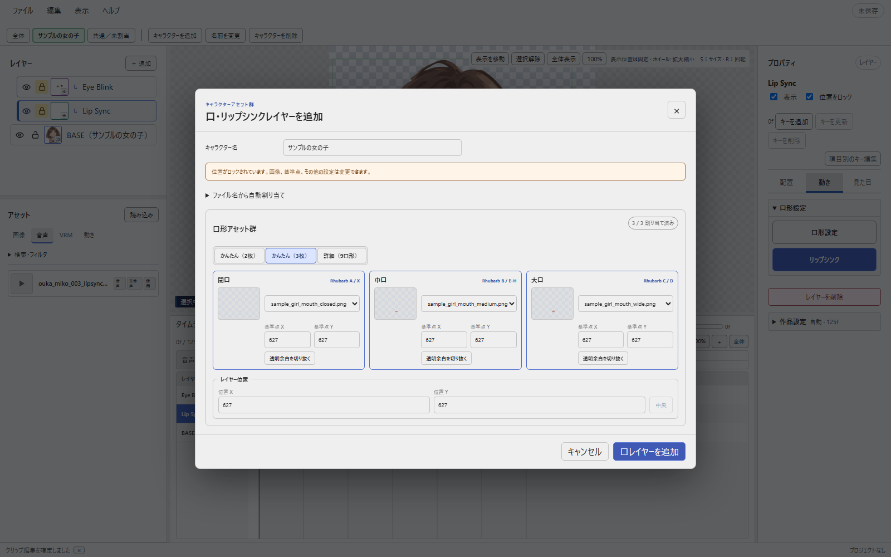
What A–H and X mean
These are speech shapes, not an increasing scale of mouth opening.
| Shape | Approximate appearance | Typical sound |
|---|---|---|
| A | Lips firmly closed | P, B, M |
| B | Teeth close, lips slightly apart | Most consonants |
| C | Open mouth | EH, AE |
| D | Wide-open mouth | AA |
| E | Slightly rounded | AO, ER |
| F | Puckered lips | UW, OW, W |
| G | Upper teeth against lower lip | F, V |
| H | Tongue behind upper teeth | L |
| X | Relaxed closed mouth | Silence and pauses |
Two-image mode maps A/X to closed and B–H to open. Three-image mode automatically groups cues into closed, medium and wide.
05
Add speech and adjust lip sync
Place audio on a character's audio row after setting up its mouth shapes. Analysis starts automatically. Play the timeline to compare speech and mouth movement. Playback, pause, stop and seek are below the preview. Right-click empty space in an audio row to add silence without moving other audio.

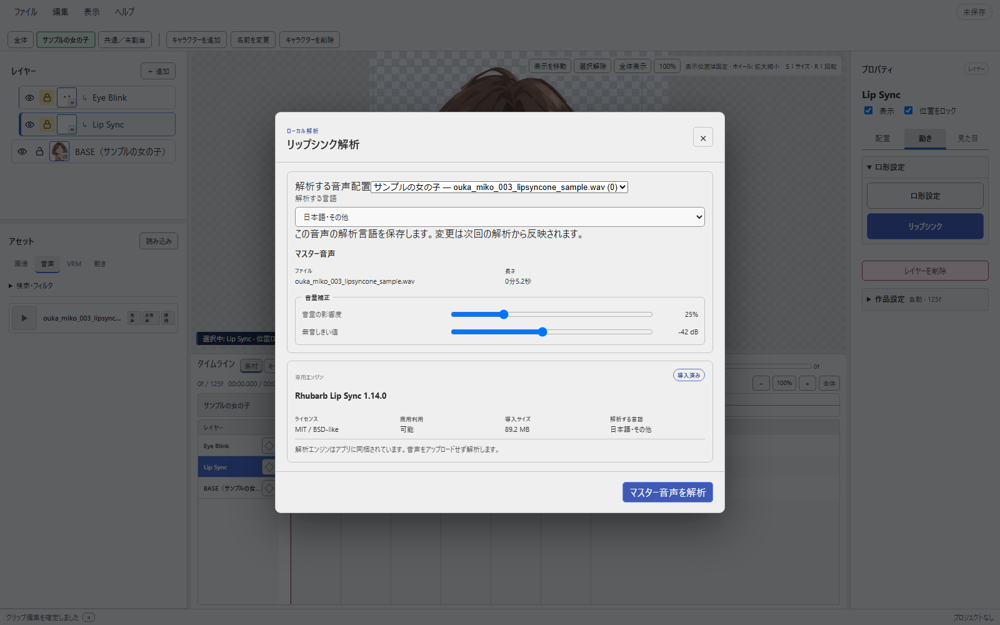
Choose the analysis language
Select a timeline audio clip and choose Japanese / Other or English in its analysis-language setting. The default is Japanese / Other. The selection is saved and retained for reanalysis. A change applies to the next analysis; reanalyze to update existing mouth cues.
If the mouth opens too much or during quiet parts
Open Lip Sync analysis for the mouth layer or audio. Increase Volume Influence or Silence Threshold slightly, then analyze again. Defaults are 25% and −42 dB. Confirm the target audio before starting analysis. Progress can be cancelled; failed analysis preserves placed audio so you can retry. Rhubarb and its data are bundled: analysis stays on your PC and needs no extra model download.
06
Add automatic blinking
Prepare open and closed eye images, optionally a half-closed image. Assign them when creating the character, or use Add → Eyes / Eye Blink. Audio is not required. By default blinking spans the whole timeline, even after a character's speech ends.
- Motion → Eye Blink sets average interval and randomness.
- Closed duration is measured in frames.
- Change Pattern changes occurrence times while retaining the chosen interval.
- Drag the blink strip's edges to change its active range.
After changing numbers, choose Apply Eye Blink Settings. To enter a range numerically, disable Match Entire Timeline in the eye layer's Placement section, then enter start and duration in frames. Reenable it to follow the full timeline. Blink settings and timing can be changed while position is locked.
07
Placement and timing
Move a strip to change its start and drag an edge to change its duration. Clips on one row cannot overlap. Use another row or a free time interval. Mouth strips show analysis; image and motion strips show placed media. The eye button by a layer name controls visibility in both preview and export. A VRM mouth-result row is controlled through its model row.
Set an In / Out range
Open In / Out on the timeline and set the first and last included frames. In 24 and Out 47 means 24 frames. Use the current-position buttons, numeric fields, range handles, or Shift+I / Shift+O with timeline focus. The range is saved and supports Undo/Redo. Crossing endpoints makes a one-frame range; shortening the timeline clamps it. It does not restrict preview playback. Choose In–Out in the export range to use it.
Audio starts in a grouped one-row view. Choose Individual to edit placements and Group to collapse it. Dragging the grouped waveform can still seek. This changes only the view, not placement or playback.
Position, scale and rotation
Select media or a layer, then use Placement. Numeric changes apply after a short pause; Enter commits immediately and Escape restores pending input. Position steps by 1 pixel, scale by 1% and rotation by 1 degree. The mouse wheel changes a focused numeric input one step at a time.

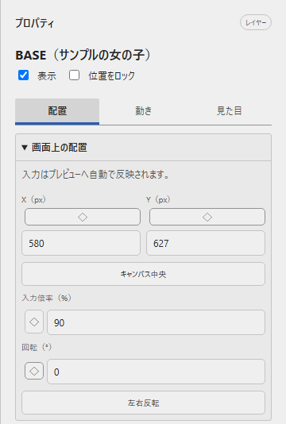
- Drag selected artwork to move it; S scales and R rotates.
- Click or Enter confirms a transform; right-click or Escape cancels.
- Use Flip Horizontally to mirror, eye icons to show/hide, and drag layer-list rows to reorder.
BASE is the body; mouth and eyes follow it. Unlock their position before moving them independently. Put backgrounds on regular layers below characters.
Timeline duration and scrolling
Automatic duration follows the last image, audio or motion. For trailing space, use Project Settings → Timeline Length → Manual. At 24 FPS, 240 frames is 10 seconds. Duration cannot end before placed media; Automatic returns to its end. Layer headers stay visible while their list scrolls. On the timeline, use the scrollbar beside layer names or wheel over those names. Over the time area, Shift+wheel scrolls vertically and the normal wheel horizontally.
Preview view and canvas size
The wheel zooms the view; Fit shows the full canvas. Enable Pan View to drag just the viewing position, then click again or Escape to return to media operations. These controls do not change media positions or output resolution.
Edit → Canvas Size changes the canvas with a current-frame preview, handles or numbers. Shift-drag a corner preserves aspect ratio. Apply commits and Ctrl+Z reverses it. Artwork is not resized: padding and crop change around the center.
KEYS
Keyframes and Auto Key
A key records a value at a particular frame. Different positions at frames 0 and 24 create movement between them.
- Select a layer and switch the timeline to Keys. Move the playhead to the desired frame.
- Change position, scale, rotation or opacity in Properties or the preview.
- Use Add Key to record the combined placement. Update Key replaces it; Delete Key removes it. The diamond groups position, rotation, scale and opacity. The first key added later in time also records the baseline at frame 0.

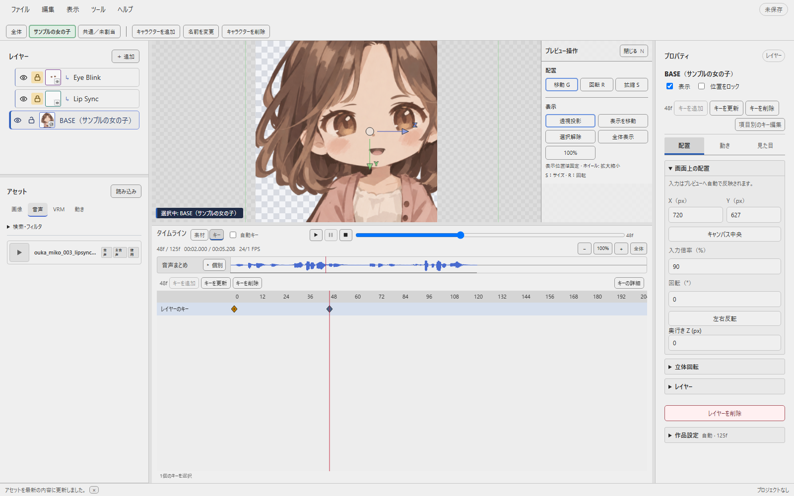
Auto Key
Auto Key is off by default. When enabled, placement edits record at the current frame, updating an existing key there. VRM joint and expression edits record the changed property.
Record uncommitted previews
With Auto Key off, editing an already keyed property first creates an uncommitted preview. Record it with I or the record control to keep it. Changing frames or cancelling with Escape discards it. Uncommitted changes are excluded from project saves and video export.
Individual keys and shortcuts
Property-level key editing includes position, scale, rotation, opacity, VRM poses, expressions and camera. Placement edits position; Motion edits pose; Appearance edits expressions and opacity. With key-timeline focus, I records combined placement and Alt+I removes it. Enter can record numeric input in Keys mode. Detailed editing acts on individual properties. Recording and deletion support Undo/Redo.
CURVES
Curves and time scaling
In key details, select a property and open Graph. Time is horizontal and value is vertical. Constant holds until the next key; Linear changes at a constant rate; Bezier uses handles for ease-in and ease-out. Drag keys and handles or use numeric fields.

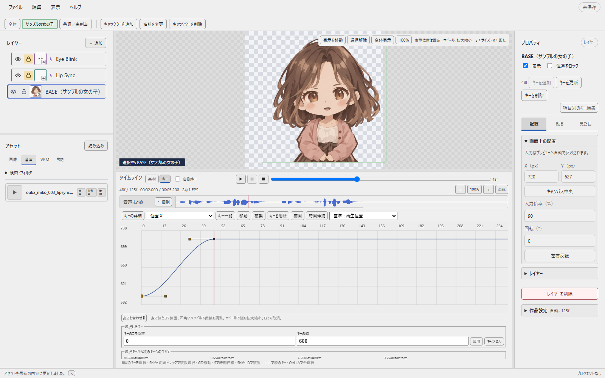
Stretch or compress motion
Select several keys and press S in the key editor. Choose the playhead, first selected key or last selected key as the pivot. Enter confirms and Escape cancels. Times snap to integer frames. This is different from S over the preview, which scales artwork.
Editable values and overlapping keys
Bezier handles edit scalar values. Vectors display X/Y/Z; 3D rotation displays angles relative to a reference. Edit the underlying vector or orientation through Properties or pose controls. Selected keys on the same property cannot collapse onto one frame. Replacing existing keys requires confirmation. The result can be undone.
SAVE
Save and move projects
File → Save (Ctrl+S) saves an .ls1 project. Normal saves do not embed images, audio, VRM or VRMA; keep the originals. Double-click the .ls1 to continue. If another project has unsaved changes, choose Save, Discard or Cancel before switching.
File → Collect Project puts the .ls1 and registered media into one folder. Move the whole folder. Check each asset's redistribution terms before sharing it.
Keep media beside or below the project file
Files in the same folder as the .ls1 or its subfolders are saved as relative paths automatically. Files outside use absolute paths. Saving does not move media.
MyProject/ ├─ MyProject.ls1 └─ media/ ├─ body.png ├─ mouth_closed.png └─ speech.wav
Move MyProject as a whole without rearranging its contents. Putting only the .ls1 in a nested folder leaves external media on absolute paths. If you move an imported original afterward, replace its reference in Assets properties and save again. Save As adjusts paths to keep referring to the same media.
Older projects and recovery
The current format is v5. Supported v2–v4 projects convert on load; originals are unchanged until you save. Basic placement and keys are carried forward, but older rendering may not match exactly. New files are not guaranteed to open in older apps. Save As preserves the old project separately.
Recovery data is saved during editing. After an abnormal exit, the next launch offers recovery. Continue using normal saves and backups too.
EXPORT
Export transparent video
Open File → Export Video (Ctrl+E). The default is compact ProRes 4444 MOV for editing, with a transparent background. Check format, background, dimensions, range and representative frames, then choose an output location.

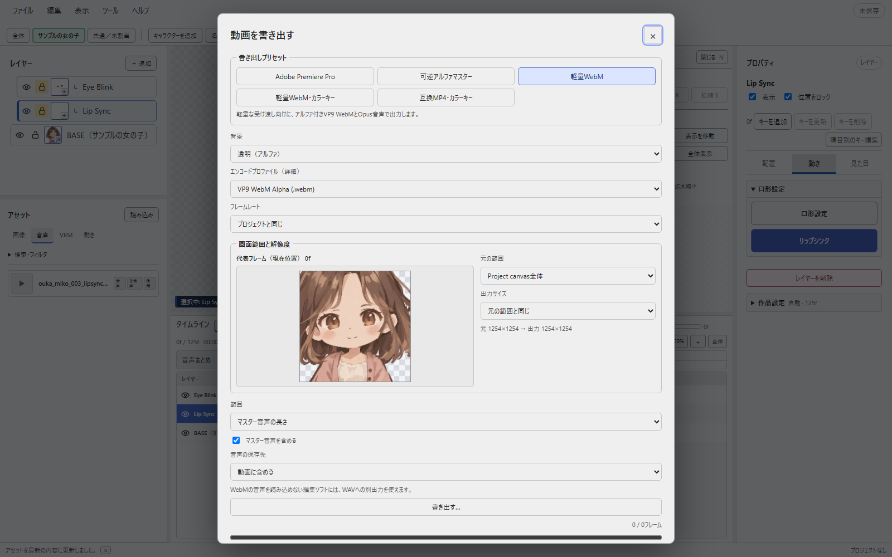
| Purpose | Format | Notes |
|---|---|---|
| Lossless image animation for DaVinci / Premiere | QuickTime Animation MOV | Lossless RGB and alpha. Efficient for held frames; continuous 3D motion may be large. Select Straight alpha in the editor if needed. |
| Compact editing file — default | Compact ProRes 4444 MOV | Lossy RGB with retained 16-bit alpha. |
| Higher-quality ProRes | ProRes 4444 MOV | Alpha-capable video for editing. |
| Smaller file for a compatible destination | VP9 Alpha WebM | The importing app must support WebM alpha. |
| Lossless master | FFV1 MKV | Lossless video including alpha. |
| Playback compatibility check | H.264 MP4 with a background color | Opaque reference only; transparency is not retained. |
Range, named presets and current-frame PNG
Saved In/Out is the initial export range when available. You may choose the whole timeline, audio length or numeric frame range instead. Confirm start, end and duration; a separate WAV uses the same interval.
Named Export Settings stores format, background, dimensions, FPS and audio/separate-WAV choices on this PC. Choose and Apply a preset; Overwrite and Delete are explicit actions. Project In/Out, crop location and output paths do not change. Up to 20 names of 64 characters are supported; a failed save keeps the previous list.
File → Save Current Frame as Transparent PNG confirms the committed frame and project resolution, then saves a full-canvas 2D/3D image. It can be outside In/Out and does not inherit video crop or output dimensions. It includes no audio or image sequence. Uncommitted previews are excluded; an opaque background image remains opaque.
If your editor cannot read the audio
Choose Separate WAV for the audio destination. Select the video location and then the WAV location. The result is a silent video plus PCM 24-bit WAV with the same mix, silence and range. Place both at the same start in your editor. Cancelling either save dialog prevents export from starting.
Mixed image/VRM projects use the same export flow and common depth/projection as the preview. View zoom is for editing; output dimensions are set here. Selection boxes and handles are excluded. Record uncommitted changes first. Export fixes its source files and settings when it begins; export again to include later external changes. You can cancel progress. If a source is temporarily unreadable during saving, finish that save and retry.
Windows players may not support transparent video or may show transparent pixels as black. Import it into the destination editor and place it above another clip. Format support depends on that editor.
INSTALL
Install on Windows
LipSyncOne is for Windows 11 x64. Download the setup EXE from the official release page. For a BOOTH ZIP, extract it and run the setup inside. Follow the installer and launch LipSyncOne from the Start menu. Then try your first sample clip.
The official-site and BOOTH executables do not have an Authenticode signature. If Windows shows a warning, confirm the source and read the message before deciding whether to run the file.
SmartScreen warnings
Confirm that the file came from the official source. More Info shows the application details. Do not run an unfamiliar file or one from an unknown source. The historical screenshots below show an older self-signed build; publisher details differ from the current release.

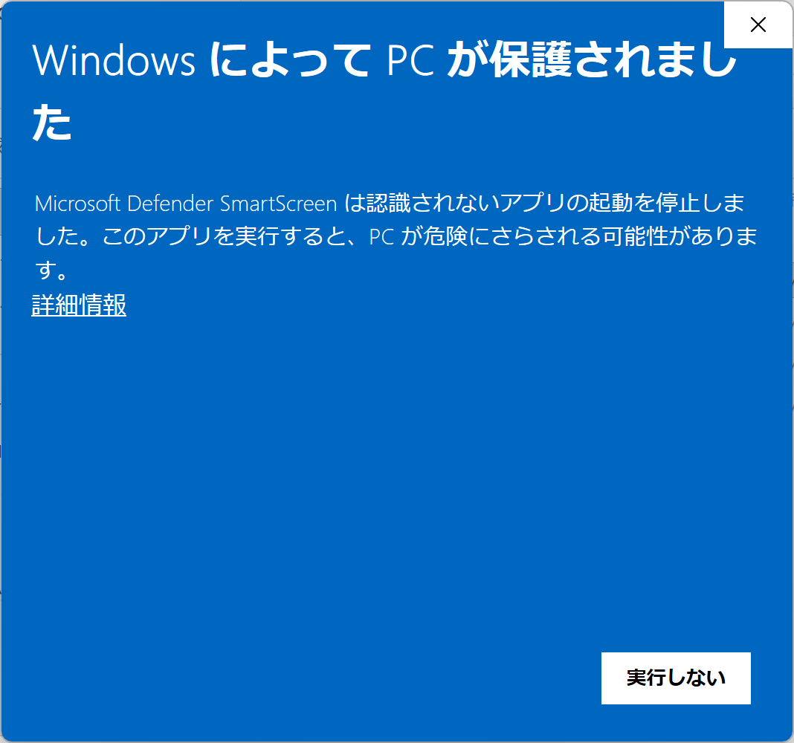

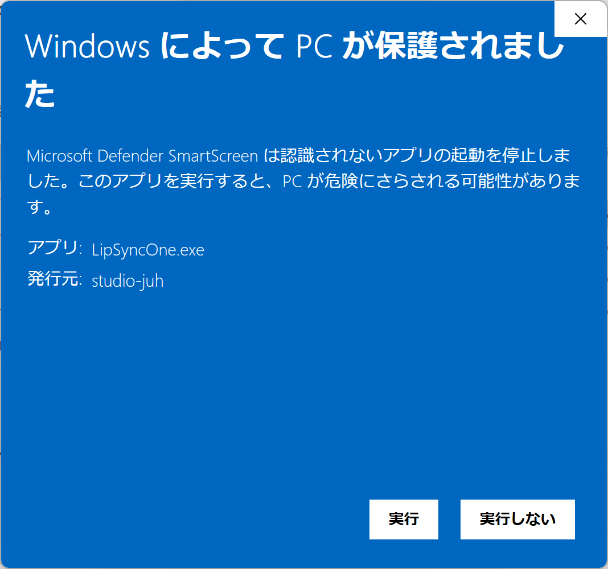
Smart App Control
This is a separate Windows protection feature. Read the stated blocking reason and Windows settings guidance. Changing protection affects the whole PC; do not change it only to dismiss a warning. The reference screenshot illustrates the settings screen and is not a recommended setting.

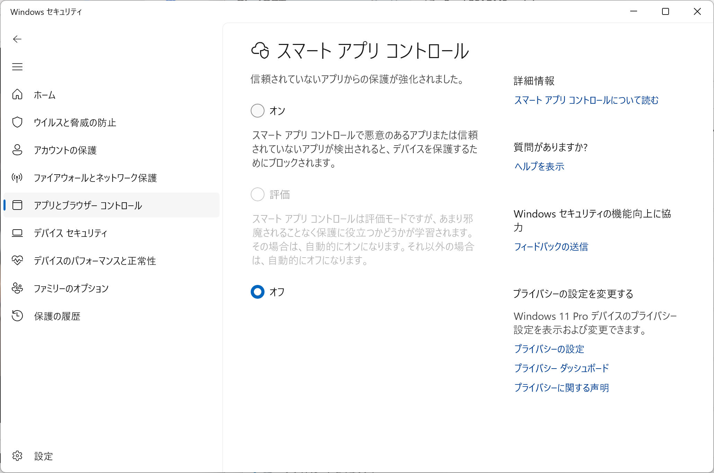
Moving from older distributions
The current distribution uses the NSIS installer. Close an old portable app and run the current setup. Microsoft Store packages are not part of the current regular distribution.
UPDATE
Update the app
- Save your project.
- Choose Help → Check for Updates. Checks are manual; none run automatically on launch.
- Read the changes and choose Update and Restart. Download can be cancelled. The app restarts after installation.
See GitHub Releases for changes and availability. BOOTH purchase certificates (.lso-license) are imported from Help → Purchase Status.
KEYBOARD
Keyboard shortcuts
| Shortcut | Action |
|---|---|
| Ctrl+S | Save |
| Ctrl+Z / Ctrl+Shift+Z | Undo / Redo |
| Space | Play / Pause |
| S / R | Scale / Rotate selection in the preview |
| G | Move a selected VRM control |
| X / Y / Z | Constrain the active transform axis |
| Numpad 5 | Switch orthographic / perspective projection |
| Enter / Escape | Commit / Cancel a transform |
| I / Alt+I | Record / Remove keys with key-editor focus |
| Ctrl+C / Ctrl+V | Copy / Paste clips |
| Shift+I / Shift+O | Set In / Out with timeline focus |
| Ctrl+E | Export Video |
| Ctrl+, | Preferences |
| Ctrl+K | Search this guide |
Transform shortcuts need a selection and preview focus/pointer context. They do not start while typing in a field.
HELP
Troubleshooting
An error occurs or audio analysis stops partway
Repeat the failed operation, then open Help → Diagnostics…. Select the matching time to see its error code, log ID and processing stage. Copy Error Summary copies the displayed summary of 800 characters or fewer for a support request; full JSON reports remain available. Choose Save Diagnostic Report to create a new JSON file, or Open Log Folder to retrieve individual logs. The latest 30 errors are retained; analysis reports also include the engine exit code and failure reason. Version 0.5.8 also records safe processing phases, elapsed time and attempt settings. Only Windows exit code 0xC0000409 triggers one retry with a single worker, linking the outcome to the first failure. VOICEVOX reports include the API name and distinguish connection, timeout, HTTP and response-format errors. Routine connection checks while the engine is stopped or starting do not create logs. Timeouts, invalid responses and failures during generation or preview remain recorded. Support codes use LS- followed by ten digits. Progress such as 13% alone cannot identify the cause, and the retry is not a confirmed fix for every environment. Review the report and include it with your reproduction steps when contacting support. Media, projects and entered text are not collected, and paths are redacted. Nothing is sent automatically. If local log storage fails, save the report before closing the app.
Imported media does not appear on the timeline
Import registers an asset. Drag images onto a layer and audio onto the character's audio row.
No sound or waveform
Confirm that audio is placed on the timeline. Try File → Reload Assets. Restore moved/renamed files or replace the asset reference. Read any message beside the playback controls and retry.
Lip-sync analysis does not start
Check that the character has mouth shapes and audio on its own row. Move audio from Shared / Unassigned to the intended character. Reinstall if the bundled engine is missing.
The mouth opens during quiet parts
Raise Silence Threshold or Volume Influence slightly and reanalyze. See lip-sync settings.
Mouth or eyes are missing
Check visibility, image assignments and positions. Separate parts require BASE at the current frame for attached mouth/eyes to appear. Two-image full-body mode does not need another body image.
I cannot place images or motion at the same time
A row cannot contain overlapping clips. Choose another layer or a free interval. A VRM mouth row shows results; put motion on its model row.
A changed pose or position is missing from the exported video
Record any uncommitted preview with I or the record button. Saves and export use committed values. See keyframes.
Seeking a VRM takes a long time
Hair/clothes physics may need to be recalculated when seeking forward. Cancel if needed, disable spring motion and adjust placement or lip sync first. Time depends on the model and PC.
Replace mouth or eyes during only part of a clip
Add a Mouth Override or Eye Override row and drag registered mouth/eye images onto it. It overrides only that interval; automatic animation returns outside it.
Remove automatic image animation
Right-click a layer and return it to a normal image layer. This also works when position is locked, retaining images, media and settings. Undo restores the automatic layer. Shift+F10 opens the menu with keyboard focus.
The end of audio is between frame lines
This is expected: the last audio sample is retained even when it ends between video frames.
Can I overlap BGM or another voice?
Different characters' audio rows play simultaneously. One row cannot overlap its own clips. Finish BGM processing and audio effects in your video editor.
A transparent video will not play in Windows
The player may not support the format. Import it directly into your video editor or export an opaque reference MP4. See formats.
Another PC cannot find the media
An .ls1 alone does not move assets. Collect Project on the original PC, then move the entire resulting folder. See saving and moving projects.
Windows blocks launch
Confirm the download source and identify the warning using the installation guide.
Still need help?
Include the app and Windows versions, steps to reproduce and the exact message. Do not send private material or personal information. Public technical reports can use GitHub Issues; contact via Marshmallow is also available.
No matching topic. Try another search term.